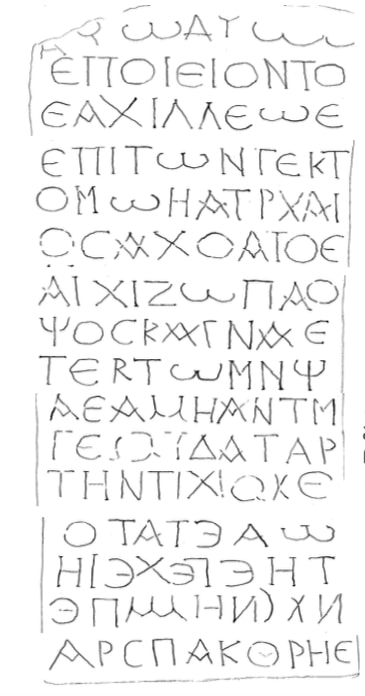

მცხეთის ანტიოქიის ეკლესიის ქვიშაქვის სტელა
შინაარსი / Summary
საამშენებლო-მოსახსენებელი
ბიბლიოგრაფია Bibliography
კრიტიკული გამოცემა Interpretive Edition
ἐποίει ὄντο -
ς Ἀχιλλέως
ἐπὶ τῶν τεκτ -
5όνων ομων Αὐρελι -
ος Ἀχόλιος
ἀρχιζωγρά -
φος καὶ ἀρχι -
τέκτων ηλ
10Α ΣΑΜΗΚΑΤΜ
ΓΕΚΥΑΧΤΑΡ
τὴν τείχι σιν μ
ΩΔΕΤ
τῆς τελείη
15μνήμης νμνήμης
Ἀρσπακόρης
დიპლომატიური გამოცემა Diplomatic Edition
ΕΠΟΙΕΙ ΟΝΤΟ
Σ ΑΧΙΛΛΕΩΣ
ΕΠΙ ΤΩΝ ΤΕΚΤ
5ΟΝΩΝ ΟΜΩΝ ΑΥΡΕΛΙ
ΟΣ ΑΧΟΛΙΟΣ
ΑΡΧΙΖΩΓΡΑ
ΦΟΣ ΚΑΙ ΑΡΧΙ
ΤΕΚΤΩΝ ΗΛ
10Α ΣΑΜΗΚΑΤΜ
ΓΕΚΥΑΧΤΑΡ
ΤΗΝ ΤΕΙΧΙ ΣΙΝ Μ
ΩΔΕΤ
ΤΗΣ ΤΕΛΕΙΗ
15ΜΝΗΜΗΣ ΝΜΝΗΜΗΣ
ΑΡΣΠΑΚΟΡΗΣ

Stele from the Antioch Church, 1997
{'ka': 'მე ვარ ანი და ოჰი (იოანეს გამოცხადება, 1,8; 21,6) - გააკეთა აქილევსმა ხუროთა (უფროსი) რომ არის. ავრელიოს აქოლიოსი მხატვართუხუცესი და ხუროთმოძღვარი... ზღუდით გამაგრება (ან -\n კედლით შემოზღუდვა)... საბოლოო (ან - საუკუნო) ხსოვნა. არსპაკორესი.'}
{'default': 'პალეოგრაფიული ნიშნების მიხედვით წარწერა II-IV სს-ით AD თარიღდება. სხვა რეალური მონაცემების მიხედვით IV-V სს-ით უნდა შემოვიფარგლოთ. ეს მონაცემებია: წარწერის დასაწყისში 2 ქრიზმა, რაც ქრისტეს მიმართ აპელაციაა და ტექსტებში\n ავრელიოს აქოლიოსის ხსენება, რაც ადრე სამთავროს სამაროვანზე მოპოვებული ეპიტაფიის მიხედვით კარგად ცნობილი პიროვნებაა. ახალი სახელებია - აქილევსი, ხუროთა უფროსი და არსპაკორესი, როგორც ჩანს, ამ წარწერის ამომკვეთი, I სახელი ბერძნულია, II ირანული, მაგრამ ეს მათ ეროვნებაზე არ მიგვითითებს. როგროც ჩანს, სტელა ჩაშენებული იყო იმ ნაგებობის კედელში, რაც აქილევსმა გააკეთა, ხოლო რაღაცა ღვაწლი ამ საქმეს ავრელიოს აქოლიოსმაც დასდო, რისთვისაც მას იხსენებენ. ძეგლი\n მნიშვნელოვანია ისტორიული პირების მოხსენიების თვალსაზრისით და იმითაც, რომ IV-V სს. იბერიაში ხდება საფორტიფიკაციო თუ რელიგიური ხასიათის ძეგლების აგება.'}
<div type="edition" xml:lang="ka" ana="mtavruli" xml:space="preserve">
<ab>
<lb n="1"/><w lemma="ქრისტე"><expan><abbr>ქ</abbr><ex>რისტ</ex><abbr>ე</abbr></expan></w>
<w lemma="განსუენება"><expan><abbr>გა</abbr><ex>ნ</ex><abbr>ო</abbr><ex>ჳ</ex><abbr>ს</abbr><ex>უ</ex><abbr>ენე</abbr></expan></w>
<w lemma="სულ">სოჳ<lb n="2" break="no"/>ლსა</w>
<name nymRef="ვაჩა">ვაჩაჲს<lb n="3" break="no"/>ასა</name>
<name nymRef="გურა"><expan><abbr>გო</abbr><ex>ჳ</ex><abbr>რაჲ<lb n="4" break="no"/>სასა</abbr></expan></name>
<name nymRef="მირა"><expan><abbr>მ</abbr><ex>ი</ex><abbr>რა</abbr><ex>ჲ</ex><abbr>ს</abbr><ex>ა</ex><abbr>ს</abbr><ex>ა</ex></expan></name>
</ab>
</div>